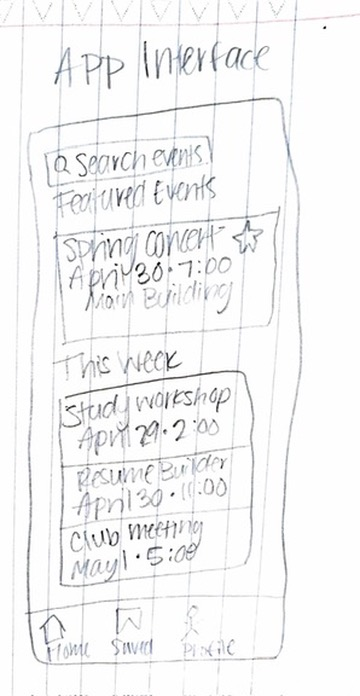
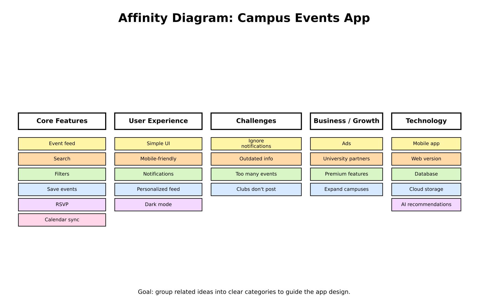
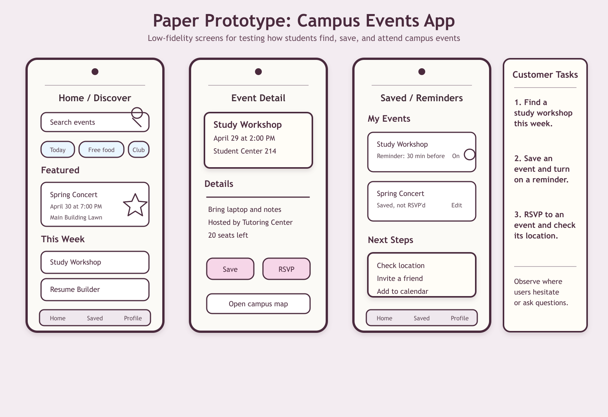

Assignment 1 - Problem Statement

Students struggle to find and track campus events when information is spread across multiple platforms.
CSCE 190 introduces the software development process through teamwork, problem analysis, prototyping, and communication. This site highlights assignment deliverables throughout the semester.
Students struggle to find and track campus events when information is spread across multiple platforms.

Sketches explore how students discover events, receive notifications, and browse upcoming campus activities in one app.

Brainstormed ideas are grouped into clusters for core features, user experience, challenges, growth, and technology.

The prototype outlines screens for discovering events, saving reminders, and completing three customer testing tasks.